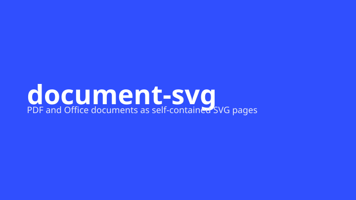
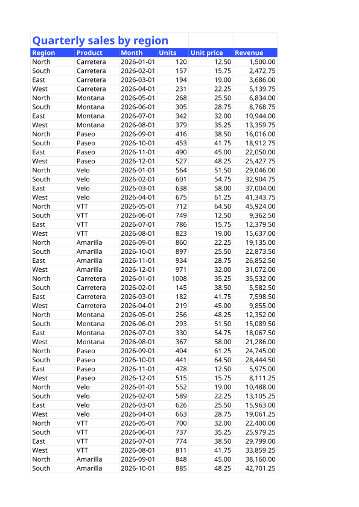
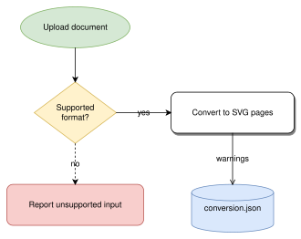
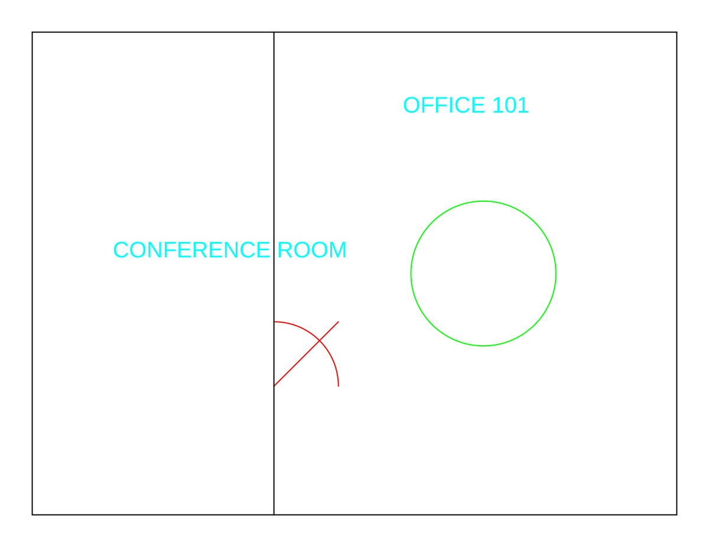
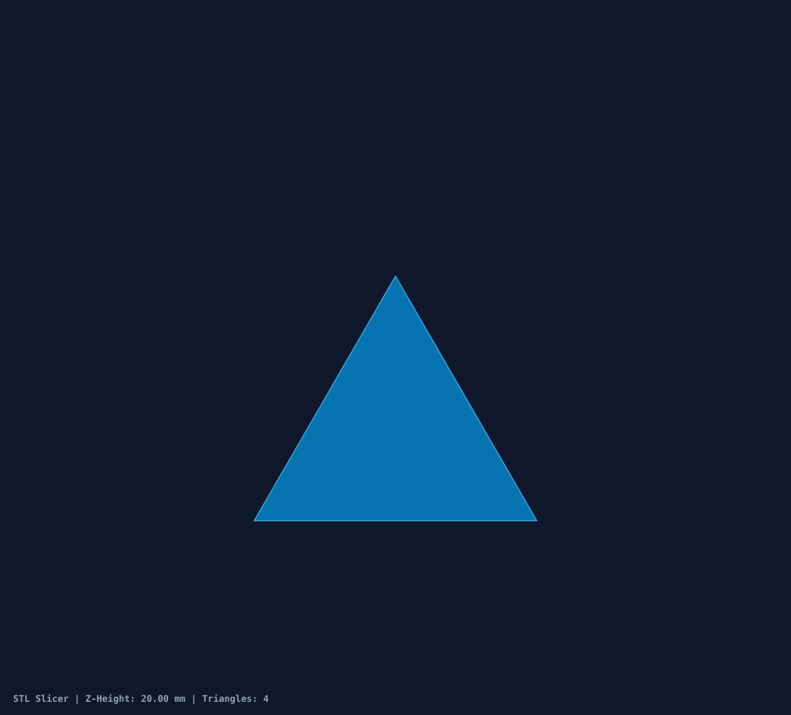
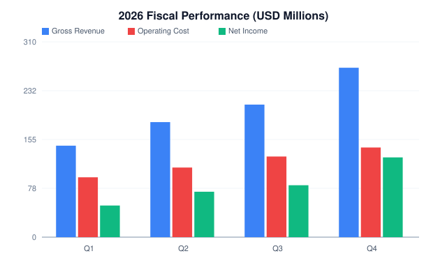

See every page of a file, without the app that made it.
document-svg turns PDFs, Word, Excel and PowerPoint files, diagrams and CAD drawings into ordinary SVG images, one per page, that any browser can show. It runs on your own machine, never uploads the file, and tells you plainly which parts it could not reproduce.
Why use it
Building document previews usually means choosing between installing heavy software and sending files to someone else's server. document-svg needs neither.
Your files stay with you
Conversion happens on your computer, your own server or inside a browser tab. There is no upload, no account and no usage tracking, so contracts and design drawings that must not leave the company can still get a preview.
Anyone can look
The result is a plain SVG image. Every modern browser shows it, it drops into any web page, and it stays sharp when you zoom in. The people reviewing it don't need Office, AutoCAD or a viewer licence.
It tells you what it missed
No converter reproduces everything. Instead of quietly dropping a chart or a font, document-svg lists what it skipped or approximated, page by page. You read that and decide whether the result is good enough to share.
Opening a file never runs it
Macros, scripts, form actions and links to outside resources are shown or skipped, never executed. Size and page limits stop a huge or broken file from eating all the memory. Treat this as one layer of protection, not a guarantee.
One tool instead of dozens
Office documents, PDFs, diagrams, CAD and 3D models, scientific and business data: hundreds of formats go through the same command and come out the same way. Some are drawn in full, others as a clear summary of what's inside. The format list says which.
And the way back
An SVG you have edited can be turned back into a PowerPoint, Word, Excel, draw.io or CAD file. What comes back is how it looks; the original paragraphs, cells and formulas are not rebuilt.
What you can do with it
It isn't an app you open on its own. It is a part you build into something else: a review process, a website, your own software or an AI assistant.
See document changes in code review
Reviewers see the changed pages instead of "binary file changed".
Preview uploads inside your own app
Show users their documents without Office on the server or a paid viewer.
Keep diagrams in step with the code
Diagrams are rebuilt from text every time the documentation is.
Check drawings and models without CAD
Look at plans, boards and 3D models from a web page.
Turn data into report-ready images
Tables, charts and formulas that look the same every time.
Let an AI assistant read documents
One dependable step instead of screenshots and browser automation.
Hand edited graphics back to Office or CAD
Package SVG pages as PowerPoint, Word, Excel, draw.io or CAD files.
What the results look like
Each image is an unretouched conversion of a sample file from this repository.





